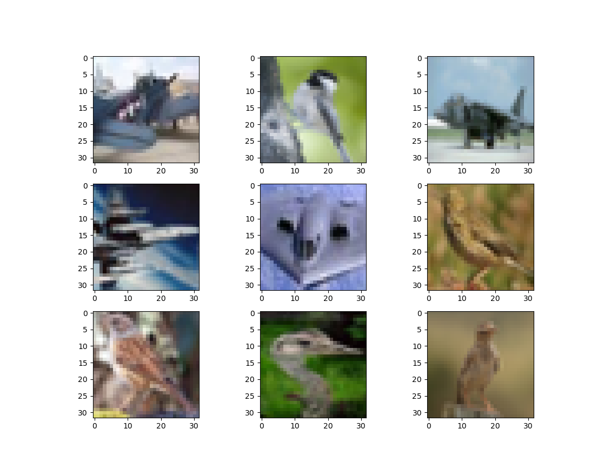

distinguishing birds from airplanes with a pytorch convnet
Written on
This post, in which we'll create a convolutional net to discern birds from airplanes, is inspired by a couple of chapters from the book Deep Learning with PyTorch, by Stevens, Antiga, and Viehmann. Here are some of the images that we'll be dealing with:

First let's load up the data and normalize it.
from torchvision import datasets, transforms
from torch import optim
import torch
import sys
cifar = datasets.CIFAR10('.',train=True,download=True, \
transform=transforms.ToTensor())
cifar_val = datasets.CIFAR10('.',train=False,download=True, \
transform=transforms.ToTensor())
# normalize the data
imgs = torch.stack([img_t for img_t, _ in cifar],dim=3)
imgs_val = torch.stack([img_t for img_t, _ in cifar_val],dim=3)
mean = imgs.view(3,-1).mean(dim=1)
mean_val = imgs_val.view(3,-1).mean(dim=1)
std = imgs.view(3,-1).std(dim=1)
std_val = imgs_val.view(3,-1).std(dim=1)
cifar = datasets.CIFAR10('.',train=True,download=False, \
transform=transforms.Compose([ \
transforms.ToTensor(), \
transforms.Normalize(mean,std)]))
cifar_val = datasets.CIFAR10('.',train=False,download=False, \
transform=transforms.Compose([ \
transforms.ToTensor(), \
transforms.Normalize(mean_val, \
std_val)]))
Downloading https://www.cs.toronto.edu/~kriz/cifar-10-python.tar.gz to ./cifar-10-python.tar.gz
100%|██████████| 170498071/170498071 [00:11<00:00, 14695382.58it/s]
Extracting ./cifar-10-python.tar.gz to .
Files already downloaded and verified
This dataset contains images of lots of other things besides birds and planes, so we'll need to filter out the images we're interested in.
# filter the images for birds and airplanes
label_map = {0:0,2:1}
class_names = ['airplane','bird']
cifar = [(img,label_map[label]) \
for img,label in cifar \
if label in [0,2]]
cifar_val = [(img,label_map[label]) \
for img,label in cifar_val \
if label in [0,2]]
Next we'll define our neural net architecture.
import torch.nn as nn
class Net(nn.Module):
def __init__(self):
super().__init__()
# convert 3 RGB channels into 16 channels
# we're starting with 32x32 pixels
self.conv1 = nn.Conv2d(3,16,kernel_size=3,padding=1)
self.act1 = nn.Tanh()
# pool and reduce images to 16x16 pixels
self.pool1 = nn.MaxPool2d(2)
# convert 16 channels into 8 channels
self.conv2 = nn.Conv2d(16,8,kernel_size=3,padding=1)
self.act2 = nn.Tanh()
# pool and reduce the images to 8x8 pixels
# we now have 8 channels of 8x8 images
self.pool2 = nn.MaxPool2d(2)
# fully connected layers follow
self.fc1 = nn.Linear(8*8*8,32)
self.act3 = nn.Tanh()
self.fc2 = nn.Linear(32,2)
self.act4 = nn.LogSoftmax(dim=1)
def forward(self,x):
out = self.pool1(self.act1(self.conv1(x)))
out = self.pool2(self.act2(self.conv2(out)))
out = out.view(-1,8*8*8)
out = self.act3(self.fc1(out))
out = self.act4(self.fc2(out))
return out
It's time to train the model; we'll do it in randomized batches.
num_out = 2
num_input = 512
num_hidden = 512
train_loader = torch.utils.data.DataLoader(cifar,batch_size=64, \
shuffle=True)
model = Net()
loss_func = nn.NLLLoss()
learning_rate = 0.01
optimizer = optim.SGD(model.parameters(),learning_rate)
err_tol = 0.1
max_epoch = 200
epoch = 0
err = 1.e5
while ((epoch<max_epoch)&(err>err_tol)):
err = 0.0
for imgs, labels in train_loader:
batch_size = imgs.shape[0]
outputs = model(imgs)
loss = loss_func(outputs,labels)
optimizer.zero_grad()
loss.backward()
optimizer.step()
err += loss.item()
err /= len(train_loader)
epoch += 1
if (epoch%10==0):
print("epoch: %d, loss: %f" % (epoch, err))
epoch: 10, loss: 0.348339
epoch: 20, loss: 0.301792
epoch: 30, loss: 0.271439
epoch: 40, loss: 0.247062
epoch: 50, loss: 0.227016
epoch: 60, loss: 0.210078
epoch: 70, loss: 0.192694
epoch: 80, loss: 0.175032
epoch: 90, loss: 0.160963
epoch: 100, loss: 0.146820
epoch: 110, loss: 0.134589
epoch: 120, loss: 0.125042
epoch: 130, loss: 0.113120
epoch: 140, loss: 0.102200
As usual, we'd like to know how well our model performs out of sample.
# check out-of-sample accuracy
num_correct = 0
for img, label in cifar_val:
label_true = torch.tensor(label)
out = model(img)
label_pred = torch.exp(out).argmax()
if (label_true==label_pred):
num_correct += 1
percent = (num_correct/len(cifar_val))*100.0
print("percent correct OOS: ",percent)
percent correct OOS: 89.5
Given the low image quality and the size of the neural net, 90% doesn't seem too bad!